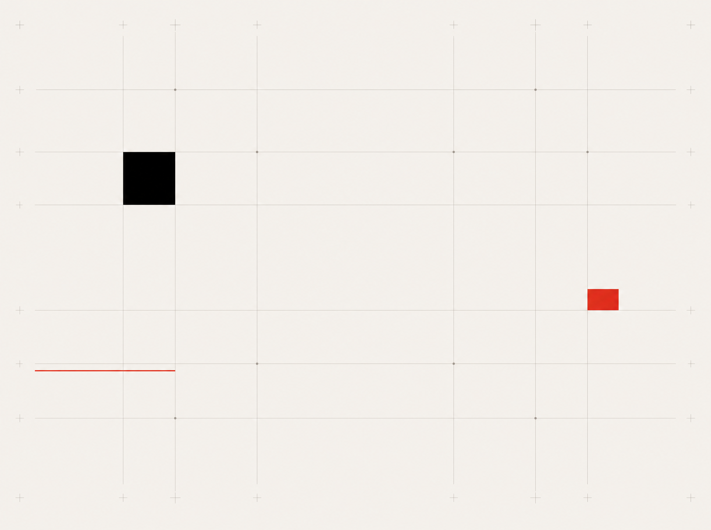

PP.MEDIA · И_И_ · кадровый контур
Обратная связь
как данные
.
УСТНАЯ ОБРАТНАЯ СВЯЗЬ
«Влад впервые сам провёл
презентацию клиенту»
стикер
четверг
стикер
прошлый
стикер
забыли
?
через 5 недель
ОСТАЛОСЬ ОЩУЩЕНИЕ, ДАННЫХ НЕТ
МАШИНОЧИТАЕМАЯ ЗАПИСЬ
EVENT · Влад · первая презентация
тип сигнала:
ключ допуска
след. шаг:
разблокировать уровень
пометка:
в карточке сотрудника
КАДРОВОЕ РЕШЕНИЕ
«рассмотреть повышение через три месяца»
ЧТО ОБРАТНАЯ СВЯЗЬ СОДЕРЖИТ, КОГДА СТАНОВИТСЯ ДАННЫМИ
01
СОБЫТИЕ
что именно произошло,
привязано к человеку
и дате
02
ТИП СИГНАЛА
допуск, риск, прогресс,
нарушение — машина
различает по семантике
03
СЛЕДУЮЩИЙ ШАГ
куда сигнал отправляется:
карьерная карта,
кадровое решение
04
СЛЕД
запись остаётся, через
5 недель видна вся
траектория, не обрывок
!
Итог
Плато не бывает: сотрудник, команда, процесс либо растут, либо деградируют.
Машиночитаемая обратная связь ловит сползание раньше, чем оно стало проблемой.